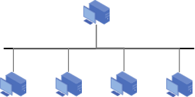
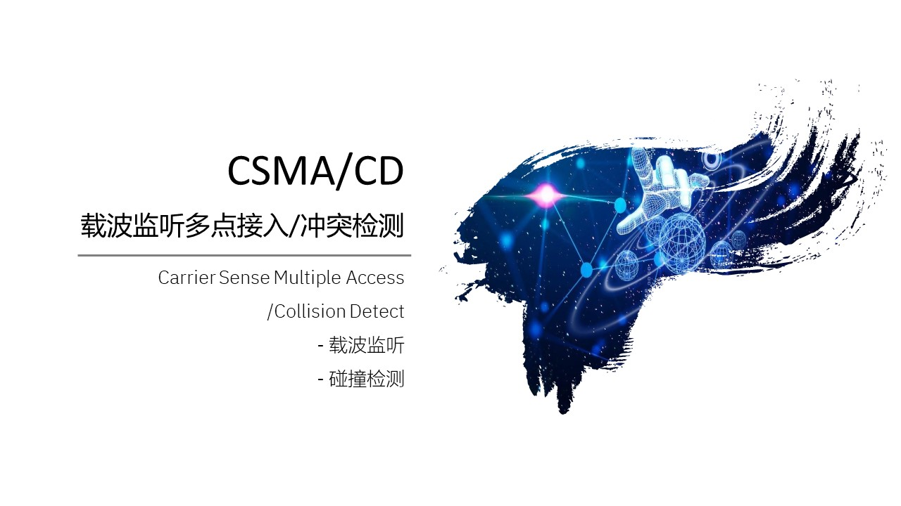
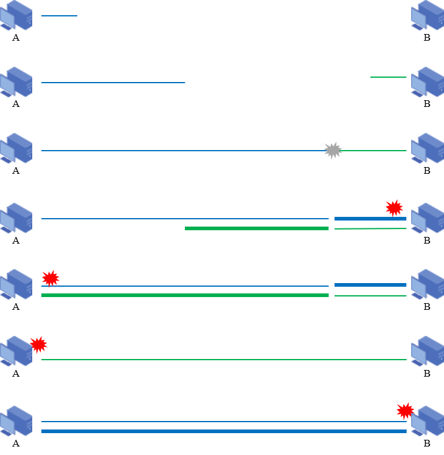
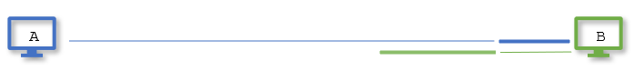

广播信道
@Broadcast- 局域网 LAN
- Local Area Network
- 地理范围和站点数目有限
- 为一个单位所有
- 广播信道的典型应用
- 优点 Merits
- 具有广播功能 broadcast
- 共享 sharing
资源共享
信道/介质共享
- 便于系统扩展和演变，可灵活调整和改变 flexibility
- 三高
可靠性高 reliability
可用性高 availability
生存性高 survivability
- 拓扑结构 Topology
- 星型 Star
- 环型 Ring
- 总线型 Bus
传统以太网 Ethernet
PAN - Personal Area Network
MAN - Metropolitan Area Network
WAN - Wide Area Network


- 以太网标准 Standard
- DIX Ethernet标准：由施乐Xerox公司创建，并联合Inter，DEC共同发布基带总线局域网标准
- 以历史上发现电磁波的以太Ether命名
- 1982年发布的第2个版本DIX Ethernet
- V2是世界上第一个互联网产品的规约。数据传输率达到10Mbps
- IEEE 802.3标准：802委员会1983年发布的第一个以太网标准，数据速率达到10Mbps
- 通常说的以太网指的是符合DIX Ethernet V2标准的局域网
- 常见以太网 Type
- 10BASE - T以太网 - 传统以太网
- 100BASE - T以太网 - 快速以太网
- 吉比特以太网 - 主流以太网
- 10吉比特以太网
- 以太网特点 Feature
- 可扩展
- 灵活性大
- 易于安装
- 稳健性高
- 共享信道 Sharing
- 计算机通过一根总线链接在一起 - 共享信道
- 每个主机发送数据时，会引起线电压发送变化，每个主机都可以检测到这个数据 - 广播
- 除了广播，还希望实现点对点通信；使用唯一的地址标识 - MAC地址
- 某个用户通信的时，随机接入信道，不需要事先建立链接
- 通过判断目标MAC地址是否匹配实现通信
- 但是同时只能有一个主机通信，否则就会产生冲突


- CSMA/CD
- Carrier Sense Multiple Access/Collision Detect
- 载波监听多点接入/冲突检测
- 多点接入
多个用户可以接入
随机接入
- 载波监听：
发前和发中，始终监听载波电压变化
避免发生冲突
- 冲突检测：
也称碰撞检测
停发
随机再发
- 过程 Procedure
- 先听再发、边听边发
主机发送数据时，为了避免冲突，必须要监听总线上的电压变化
发完了，就不听了
如果没有检测到电压变化，是不是就以为着没有用户使用信道，不会发生碰撞？
- 冲突停止、延迟再发
如果达到一定阈值的时，就可以判断有站在发生数据，应向总线上发一串阻塞信号，用以通知总线上通信的对方站点（强化阻塞）
同时停止发送数据，等待信道空闲时再次发送
最多经过2倍端到端时延2τ就可以确定是否有碰撞发生，即：如果发送完数据后，经过 2τ 还没有检测到碰撞，就可以认为数据发送成功
2τ 也叫争用期、冲突窗口、碰撞窗口
- 使用于半双工通信网络 - 不能同时发送数据
- 碰撞分析 Analyze
- 假设端到端的时延为 τ
- A发送数据后，经过 τ 才能传到对端的B
- A发前侦听信道空闲，开始发送数据
- 在A发送的数据到底B前，B侦听信道也为空闲，B也开始发送数据
- 必然会在某个时刻发生碰撞
- 在碰撞信号传输到对端之前，AB都不知道发生了碰撞
- 碰撞信号到达B。B检测到碰撞；停止发送数据
- 碰撞信号到达A。A检测到碰撞；停止发送数据
- 用户发送数据后，最多经过2倍的端到端时延 2τ 就知道是否发送了碰撞
- 发送方必须在发送过程中持续监听/发送至少 2τ，才可能检测到最晚发生的碰撞
- 用户必须能够在发送完整个帧之前，就应该检测到是否发生了冲突
- 帧的发送时间 ≥ 2τ 是 CSMA/CD 正常工作的前提条件
- 最短帧长 Minimum length
- 最大网络跨度：早期以太网标准（10BASE5）规定，网络两端最远距离为 2500m
- 最多中继器数：允许使用4个中继器来扩展网络 - 物理层拓展网络
- 信号传播速度：在铜缆中大约为 2×108 m/s
- 往返时延 RTT - Round-Trip Time：经过详细计算，考虑电缆长度、中继器延迟等，信号从一端传到另一端再返回的最长时间被确定为 51.2μs
- 端到端时延必须小于争用期的一半：51.2μs/2 = 25.6μs
- 最小帧长 = 数据速率 × 争用期
= 数据速率 × 发送时间
= 10 × 106 bps × 51.2 × 10-6 s
= 512 bit
= 64 byte - 帧长不足应通过填充实现
- 避免数据帧太短导致发送时间不足引起误判
- 抛去帧的地址、校验和类型这些开销，数据部分至少46 byte
| 发送时延 | 数据发送需要的时间 |
| 传播时延 | 数据传输到对端需要的时间 |
| 排队时延 | 数据缓冲等待处理的时间 |
| 处理时延 | 处理数据需要的时间 |
数据传播到对端的时间 – 端到端时延 τ
往返时间 2τ
A、B相距1Km
使用同轴电缆链接


| Destination MAC | 6 |
| Source MAC | 6 |
| Type | 2 |
| Data | >=46 |
| FCS | 4 |
| t=0 | A开始发送数据 |
| t=t' | B检测为空；发送数据；发送碰撞 |
| t=τ | 碰撞信号向A传播 |
| t=1.5τ | A发完数据；停止监听 |
| t=2τ | 碰撞信号到达A；但A无法知道 |
τ = 1Km / 200000 Km/s = 5*10-6s = 5μs
2τ = 10μs
最短帧长 = 2τ* 1Gbps = 10*10-6s*1*109bps=10*103bit
= 10000 bit
= 10000/8 byte
= 1250 byte
重传时机 Wait
- 发送检测到碰撞会立即停止发送
- 随机等待一定时间后再择机发送
- 措施 Solution
- 采用截断二进制指数退避实现
Truncated Binary Exponential Backoff
- 每个发生冲突的用户随机分配一个退避时间
- 获得最小退避时间的站优先发送
- 约定 Convention
- 基本退避时间 2τ
- 使用bit作为争用期的单位
争用期是512bit；表示争用期为发送512bit的时间 - 比特时间
- 退后重传时间 = r * 争用期
r 从整数集合 [0, 1, 2, ..., 2k-1] 中随机获取
k 由重传次数获取 k = min[重传次数， 10]
- 比特时间 Bit Time
- 发送一个比特所需的时间
- 与数据传输速率密切相关
- 是衡量信号变化速度的基本时间单位
- 常用于网络和通信中描述帧的持续时间、冲突检测窗口等
- 数据速率为 1 Mbps，则每个比特时间为 1 μs
- 数据速率是 1 Gbps，则每个比特时间为 1 ns
- 帧的最小间隔时间
- 96比特时间
- 使得接收方处理数据以便做好接受下一帧的准备
k = min[1， 10] = 1
r = [0， 21-1] = [0, 1]
k = min[2， 10] = 2
r = [0， 22-1] = [0, 1, 2, 3]
k = min[3， 10] = 3
r = [0， 23-1] = [0, 1, 2, 3, 4, 5, 6, 7]
对应10Mbps的以太网，争用期 2τ = 512bit/10Mbps = 51.2μs
退避时间为 r*2τ = 100 * 51.2μs = 5.12ms
如果是100比特时间，则实际退避时间为：100bit/10Mbps = 10μs < 51.2μs → 以太网无法运行
Summary & Homework
- Summary
- 局域网
- 载波侦听多点接入/冲突检测
- 端到端时延 τ
- 争用期 2τ
- 比特时间
- 退后重传时间 r*2τ
- 最短帧长
- 帧的最小间隔时间
- Homework
- 发前监听信道为空闲，则发送数据不会产生冲突（）。
- 帧长小于64字节的帧都是无效帧（）。
- 发送数据时，如果检测到碰撞，应立即停止发送；直到信道空闲时才可以再次发送数据（）。
- Reading